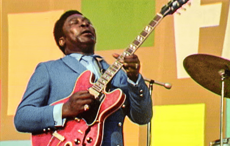
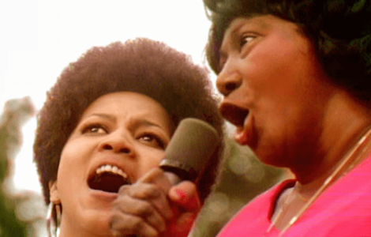
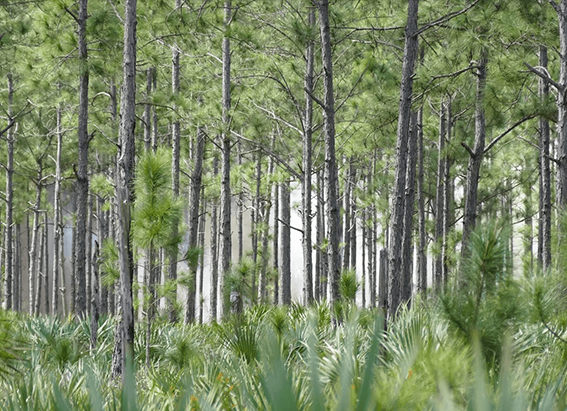
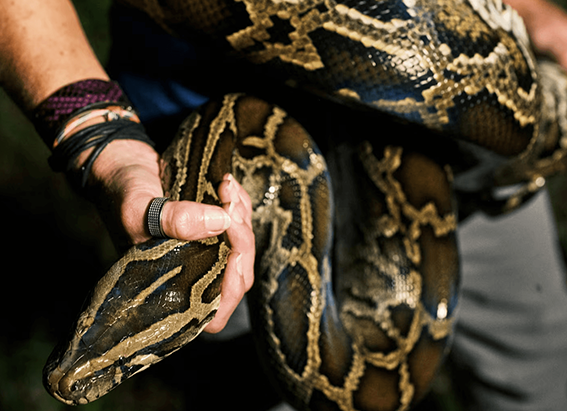
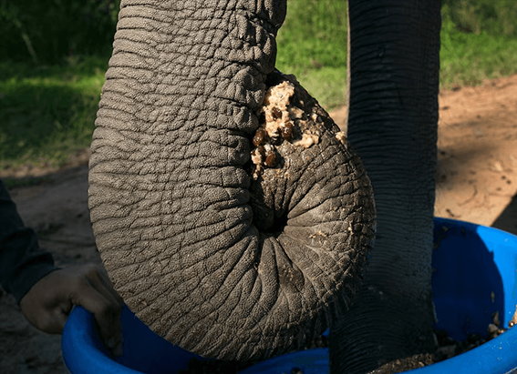

NATIONAL GEOGRAPHIC
Questlove on the ‘Summer of Soul’ ‘An awesome look at beautiful people having fun’
HISTORY & CULTURE
- 
- 
For six weeks during the summer of 1969, some 300,000 people flocked to Mount Morris Park (now Marcus Garvey Park) in New York City for the Harlem Cultural Festival. With its star power and rapt crowds, the musical event rivalled Woodstock, the four-day affair that was held one hundred miles north later that summer. But the Harlem festival, featuring legends like Stevie Wonder and Nina Simone, has largely been forgotten and its role as a defining American cultural experience long overlooked.
In 2021, Ahmir “Questlove” Thompson, drummer for the Roots, reintroduced the festival with his debut documentary Summer of Soul (…Or, When the Revolution Could Not Be Televised), using footage of the performances that had never been shown. Nominated for a Best Documentary at this Sunday’s Oscars, the film shines a light on the importance of history and stands as a testament to the healing power of music during times of unrest, both past and present.
On the eve of the Oscars, Questlove spoke with National Geographic editors Debra Adams Simmons and David Beard in a wide-ranging conversation, in which he emphasized that Summer of Soul is a celebration of Black joy and a rejection of Black erasure. As he and his team put together the film in 2020, amid the rise of COVID-19 deaths and protests against racial injustice, Questlove knew he had to set the historical record straight.
Questlove: I’m really proud of Summer of Soul because, all too often, when you see films about the Civil Rights era and the revolution of the time, you often see our pain, our suffering, our sorrow, our tears, our blood, but Black joy is, to me, probably the most important element of the story of the Civil Rights struggle and the struggle of African Americans in the United States because it humanizes us, and it makes us relatable. Harlem Cultural Festival is just an awesome look at beautiful people having fun, having their joy in a way that you’ve never seen anyone from this era look.
Debra Adams Simmons: There is Black history that has been erased or buried, and there are these efforts to restore history. How can people engage in this work?
Questlove: This is one of the rare times in which an idiom like the truth will set us free really does apply. Oftentimes, we have a disdain for the past. Even in entertainment, I’ll play something old, and people will often have a jolted or traumatized reaction to any sort of exploring our past. But I do believe that you can’t move into the future until you know what the past is. I’m not surprised at all that there are efforts to suppress history. And I believe that for those who want to uncover history, you know, lead that fight and know that you have a responsibility.
I’ll be very honest with you, this was very intimidating for me. I didn’t take this just as, okay, let me figure out which Stevie Wonder songs, which Sly and the Family Stone songs go together. I knew I was restoring history, and I put that pressure on myself that, oh man, this has to be a grand slam. This can’t be anything less than hitting it out of the park. This is my one chance to slam dunk it for my people, and that was very, very intimidating. And you know, I was just afraid that I’d get it wrong or I’d fumble. But every day, I stayed focused and meditated and wound up, I think, with a very beautiful piece of work that I’m very proud of.
I think that there’s more out there. And I’m rolling up my sleeves, and I’m looking for more history to uncover and teach people.
DAS: Can you talk about the title, Summer of Soul, and the full title? And how you landed on that and why?
Questlove: When the Woodstock Festival happened in 1969, it got to define a generation. You can’t even think about the Summer of Love in the ‘60s and hippies without saying the word Woodstock. The marketing of Woodstock probably did more to define a generation than the actual event.
Around 1972-73, Hal Tulchin [the Harlem festival producer who made the original footage] wanted to clearly explain to his distributors that look, you remember Woodstock and how magical that was, right? Well, I have something magical right here, too, and it’s the Black version, Black Woodstock. So our film got tagged Black Woodstock.
On the last day before we locked production, I woke my girlfriend up and I was like, “Yo, what do you really think about the title?” And she was like, “You might as well throw your film in the trash if you put this out in the world as Black Woodstock.”
She said it would do such a disservice to your community and for history if you based this concert on something that came afterward. This concert is the original.
Comments :
- john Very good
- john Very good
Leave a Reply
Your email address will not be published. Required fields are marked*
Related posts:
-
Is this paradise or a parking lot This Florida ecosystem is a battleground.
MIAMIOn a recent summer evening, I stood in a parcel of one of the world’s rarest ecosystems, home to dozens of endemic, threatened, and even endangered species and I stepped on one. Oops.
View article -
Florida has a python problem are bounty hunters the solution
The air is thick and soupy. Pythons seem to like stormy, humid air, says professional hunter Amy Siewe, and Hurricane Idalia is about to make landfall in Florida.
View article -
$1,500 for 'naturally refined' coffee Here's what that phrase really means.
Fancy a cup of coffee with beans plucked from an elephant’s poop? That’s the promise of one of the world’s current priciest coffee options. Sold in two-serving packets for about $150, the brew’s served at luxury hotels and to VIP clients
View article